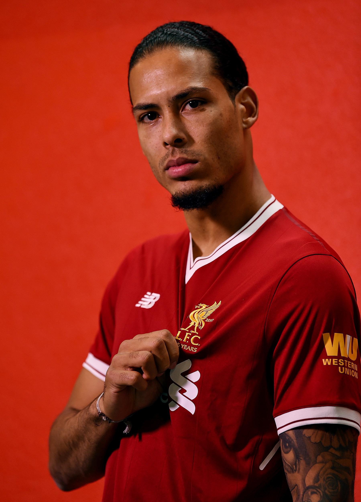

Virgil van Dijk
Virgil van Dijk is a right-footed centre-back, who usually features on the left-hand side of central defence, although he can also play as a right-sided centre-back. Neil McGuinness called him "everything you would want if you could create a profile of the ideal central defender", praising him as a "very smooth ball-playing defender" who possesses aerial prowess, skills from dead ball situations, and "strong leadership qualities".